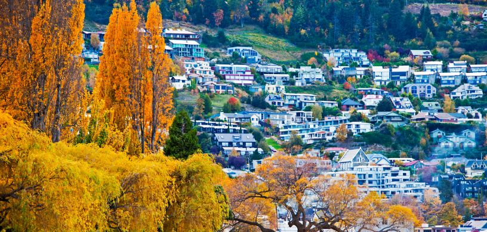

New Zealand is popular for its breathtaking scenery, energetic culture, and top-notch educational system. The nation provides a unique opportunity for overseas students to study agriculture, taking advantage of its modern research and long history of farming. The agricultural programmes in New Zealand are designed to provide students with modern knowledge and practical skills, allowing them to take on global issues in environmental management, agribusiness, and sustainable farming. Studying agriculture in New Zealand offers an encouraging path to a fulfilling career in a field that is essential to the world's food security and environmental health, with a strong emphasis on practical experience and industry links.
Why is it beneficial to study agriculture in New Zealand?
With so many advantages, studying agriculture in New Zealand is a popular choice among overseas students. It's beneficial for the following reasons:
- World-Class Education:
New Zealand's agricultural and university institutions are well-known throughout the world for their creative teaching strategies and excellent standards. They provide modern research facilities and a curriculum that includes agricultural science's most recent developments.
- Practical Experience:
By focusing on real-world experience, students are certain to acquire important practical skills. Fieldwork, internships, and practical projects are some of the ways that students might get ready for a career in agriculture.
- Strong Industry Connections:
The agricultural programmes in New Zealand are closely connected to the industry, offering students chances for networking, internships, and possible career placements. This relationship guarantees that the instruction is current and in keeping with business demands.
- Sustainable Practices:
New Zealand is a leader in these areas. Students gain knowledge of advanced approaches and tools for sustainability, which are essential for tackling issues like food security and climate change on an international level.
- Diverse Ecosystems:
Its diverse topography, which ranges from mountainous to coastal plains, provides a unique living laboratory for researching various farming methods and environmental factors.
- Cultural Experience:
Participation in New Zealand's rich cultural legacy, particularly the Māori culture, which has a strong bond with the land, is another benefit of studying there. The educational experience gains an essential dimension from this cultural immersion.
- High Quality of Life:
New Zealand is known for its beautiful communities, safe environment, and high standard of living. With access to lively cities, stunning outdoor areas, and natural surroundings, students lead balanced lives.
- Global Recognition:
A degree from a New Zealand university is respected around the world, improving one's chances of finding work. The knowledge and abilities acquired are useful in a variety of international environments.
- Research Opportunities:
Students can participate in innovative academic projects that advance our understanding of agriculture worldwide. Students in New Zealand can be at the forefront of groundbreaking discoveries and developments thanks to the country's focus on innovation.
- Supportive Environment:
International students can find a friendly atmosphere in New Zealand, along with resources and amenities to help them settle in and succeed in their everyday lives and their studies.
All things considered, pursuing a degree in agriculture in New Zealand gives students an excellent education, real-world experience, and a global perspective—all of which position them for success in a profession that will be important to their future.
Best specialisations in agriculture to pursue in New Zealand:
- Sustainable Agriculture
- Agribusiness Management
- Plant Science
- Animal Science
- Soil Science
- Agricultural Engineering
- Food Science and Technology
- Agricultural Economics
- Horticulture: Agroecology
- Precision Agriculture
- Entomology
- Agricultural Biotechnology
- Agricultural Education and Extension
- Environmental and Natural Resource Management
Each specialisation has its own advantages and can lead to a fulfilling career in agriculture. When selecting a specialisation, take into account your interests, your strengths, and the particular requirements of the area or sector you want to work in.
New Zealand’s Best universities for Agriculture:
Several esteemed colleges and other institutions recognised for their excellent agricultural programs may be found in New Zealand. The following are a few of New Zealand's best universities for agricultural studies:
- University of Otago
- Lincoln University
- Massey University
- University of Auckland
- Auckland University of Technology (AUT)
- University of Waikato
These universities are recognised for their excellent research facilities, industry connections, and high-quality education, which makes them great options for anyone interested in a career in agriculture in New Zealand.
What is the Cost of an Agricultural Education in New Zealand?
Summary of Costs for Studying Agriculture in New Zealand (International Students):
- Tuition Fees:
- Undergraduate: NZD 25,000 - 40,000/year
- Postgraduate: NZD 30,000 - 45,000/year
- Living Expenses:
- Accommodation: NZD 800 - 1,500/month
- Food: NZD 200 - 400/month
- Transport: NZD 100 - 150/month
- Utilities: NZD 100 - 200/month
- Miscellaneous: NZD 200 - 400/month
- Additional Costs:
- Health Insurance: NZD 300 - 700/year
- Student Services Fee: NZD 500 - 1,000/year
- Study Materials: NZD 500 - 1,000/year
- Estimated Total Annual Cost:
- Undergraduate: NZD 45,000 - 60,000/year
- Postgraduate: NZD 50,000 - 65,000/year
Scholarships are available and can significantly reduce costs. Check university websites for details.
Eligibility Criteria to Study Agriculture in New Zealand:
Academic Standards for Undergraduate Courses:
Qualifications:
Completion of secondary school education (international degree or NCEA Level 3
equivalent in New Zealand).
Subjects: It is frequently necessary to have a strong
foundation in science courses like biology, chemistry, and maths.
English Language
Proficiency: Evidence of English language ability on tests such as the TOEFL, IELTS, or
equivalent (minimum score of 6.0 overall with no band lower than 5.5).
Postgraduate Programs:
Qualifications: An appropriate
bachelor's degree in good standing with courses. Work experience in the field may be
required for certain programs.
Research Proposal: A research proposal may be
necessary for postgraduate programs that are research-based.
English language
proficiency requirements are comparable to those for undergraduate study; IELTS, TOEFL,
or similar approved test scores are required.
Additional Requirements:
job Experience: Relevant job experience or internships
may be required for some programs, particularly those at the postgraduate level.
Portfolio: A portfolio of work may be necessary for some specialised degrees, such as
agricultural engineering or design.
Interviews: As a requirement for admission,
some courses may require an interview.
Qualifications for a Visa:
Student Visa: To obtain a student visa, you must have an offer of admission from an
educational institution in New Zealand.
Evidence of having enough money to pay for
living expenses and school.
insurance for health and travel.
passport-sized
pictures and a valid passport are required.
Character and Health Requirements Medical Exam: It could be necessary to obtain a health certificate and have a medical examination.
Police Clearance Certificate: To prove one's moral character, one may need to present a
police clearance certificate.
Scholarships & Financial Aid Application: Review
the grants and scholarships that are available, especially for students from abroad, and
submit an application in accordance with the university's policies.
Career Opportunities in New Zealand Following Agriculture Completion:
Graduates with a degree in agriculture from New Zealand have a variety of career opportunities available to them, both within the country and internationally. Here are some potential job opportunities:
- Agricultural Scientist
- Agribusiness Manager
- Farm Manager
- Agricultural Consultant
- Soil Scientist
- Animal Scientist
- Agricultural Engineer
- Food Scientist/Technologist
- Horticulturist
- Environmental Consultant
- Agricultural Policy Analyst
- Crop Advisor
- Extension Officer
- Sustainability Specialist
- Agricultural Economist
Students can contact Edwise International with any questions or for more support. For students who are interested in studying overseas, we provide a wide range of services, such as information about universities in the UK, USA, Ireland, Canada, Australia, New Zealand, Singapore, and many other nations.